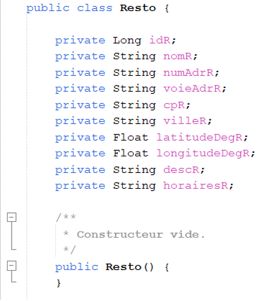
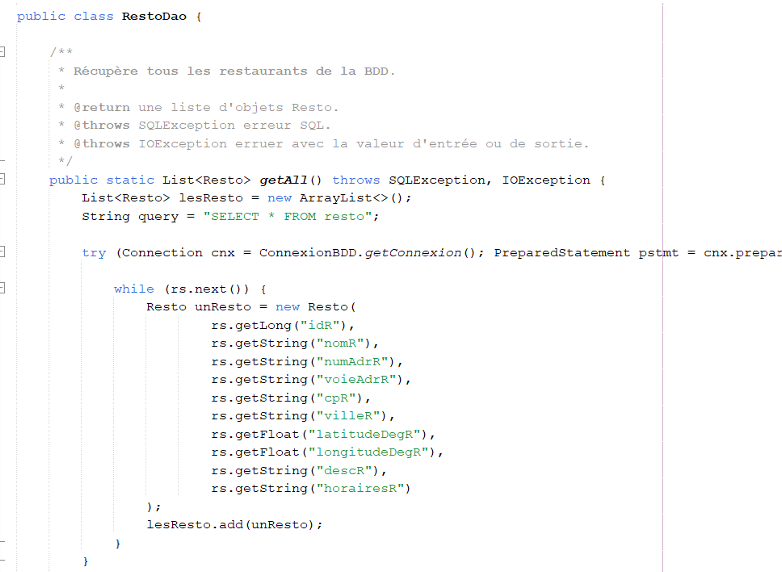
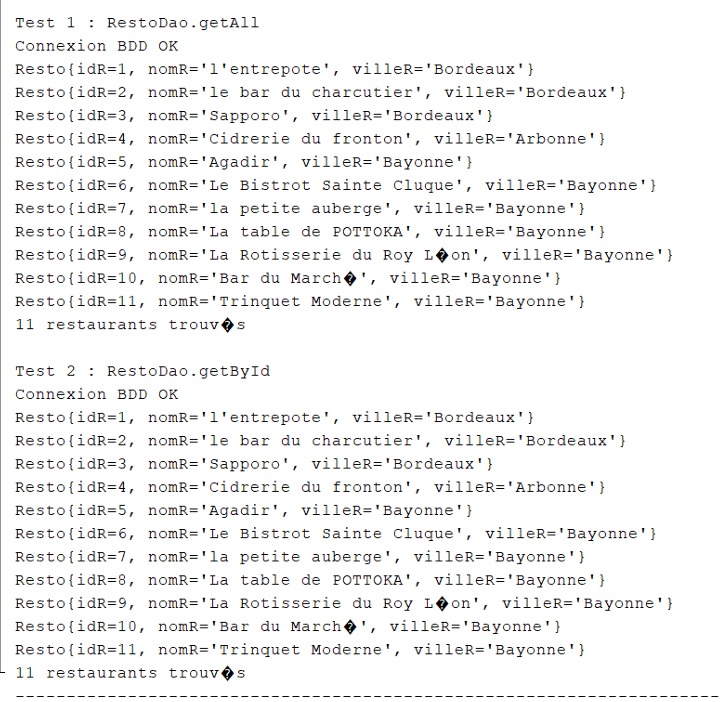
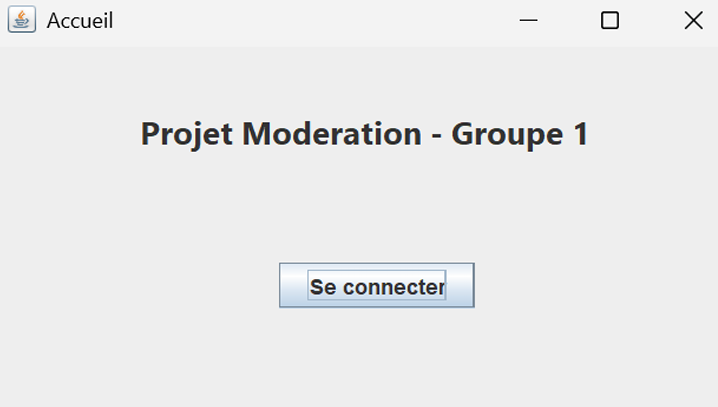
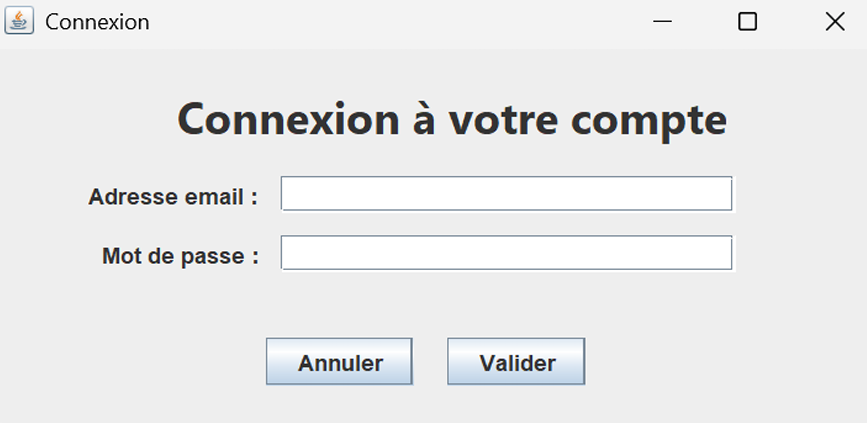

Itération 1 – Projet Modération
Cette première itération avait pour objectif d'initialiser l'application Java de modération pour R3st0.fr.
Elle devait permettre aux modérateurs d'afficher une liste des restaurants avec leurs noms et villes dans la console,
et préparer la structure pour la future interface graphique.
Lien des branches des tickets réalisés (GitLab)
On s'est organisé en utilisant GitLab pour suivre l'avancement de l'itération 1, avec des tickets spécifiques pour chaque tâche clé :
1. Mise en place du projet Java
- Création du projet Java dans un IDE (ici Netbeans)
- Initialisation du dépôt GitLab avec labels, jalons et tickets pour l’itération 1
- Création de la structure de packages pour les classes métiers et DAO
2. Classes métiers et DAO
- Création de la classe Restaurant avec les attributs : nom, ville

- Création des classes DAO pour interagir avec la base de données existante (extrait)

- Test de l’affichage des restaurants dans la console

3. Maquette et interface utilisateur
- Utilisation de Netbeans pour la conception des écrans de l’interface graphique future (.jar)

- Préparation de l’architecture Swing pour la suite du projet

4. Tests et validation
- Test unitaire des classes métiers
- Test d’intégration avec la base de données
- Documentation technique sur le GitLab et génération de javadoc
5. Tests fonctionnels
Dans notre compte rendu on effectué différents tests pour valider le bon fonctionnement de l'application
comme par exemple avec un/une :
- Affichage correct de la liste des restaurants dans la console
- Vérification que chaque objet Restaurant contient le nom et la ville
- Test des méthodes DAO pour récupérer les données de la base
Pour voir les tests plus en détail, consultez le compte rendu de l'itération 1.
Bilan de l’itération 1
L’itération 1 a permis d'initialiser correctement le projet Java, de mettre en place le GitLab, de créer les classes métiers et DAO,
et d’afficher les restaurants dans la console. La base de l’application est prête pour les itérations suivantes,
incluant l’interface graphique et la modération complète des avis.